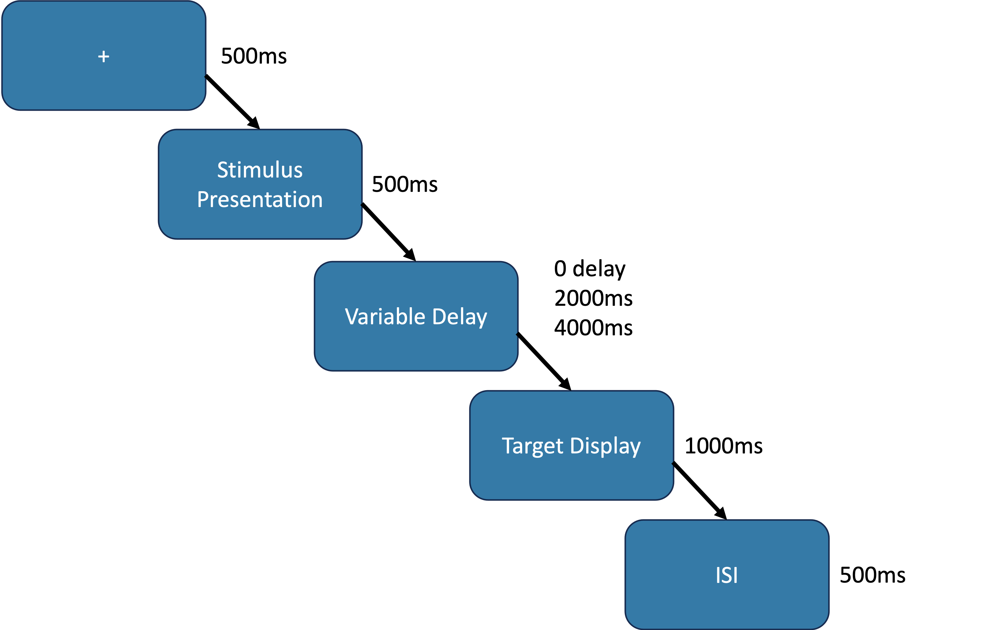

Psychology Labs and Resources

Department of Psychology
Delayed Matching to Sample
Download TaskDescription
in The DMTS the participant is shown a sample stimulus and then, after a variable time, a pair of test stimuli and is asked to select the test stimulus that matches the earlier sample stimulus. Correct selection of the matching stimulus is reinforced. In zero-delay matching to sample, the test stimuli are presented as soon as the sample stimulus is removed. The task becomes more difficult as the delay interval between the two presentations increases.
Figure 1: A single trial in the DMTS
